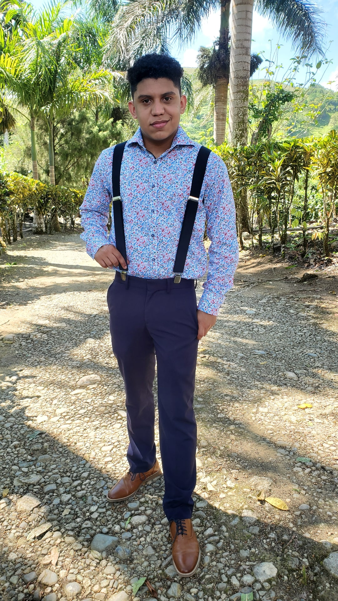
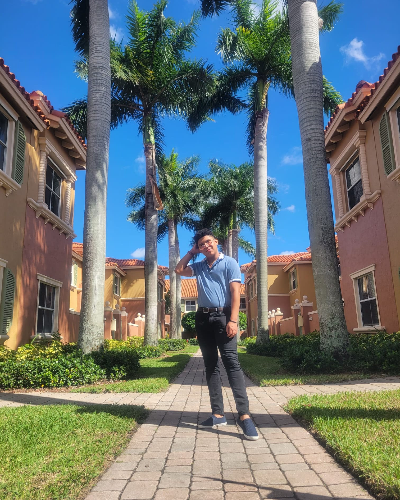

This is my world well at least part of it. My name is Alberto Santiago and I use He/Him pronouns. I was born in Moca, Dominican Republic but raised in New York City. I am a third year student at the University of Wisconsin Madison currently looking at persuing a degree in Information Science.
I love my plants and eventually want every inch of my house to be covered in them.

I love to cook and more than that I love to eat

When I have the budget, time, and energy I enjoy fashion.
